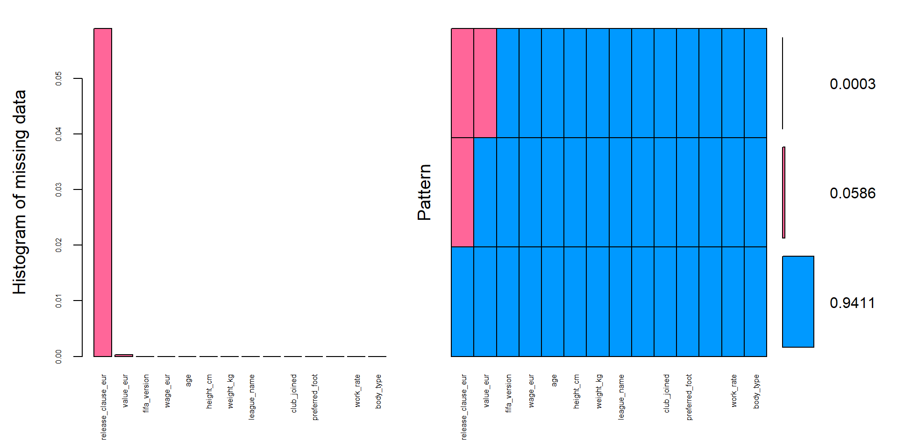
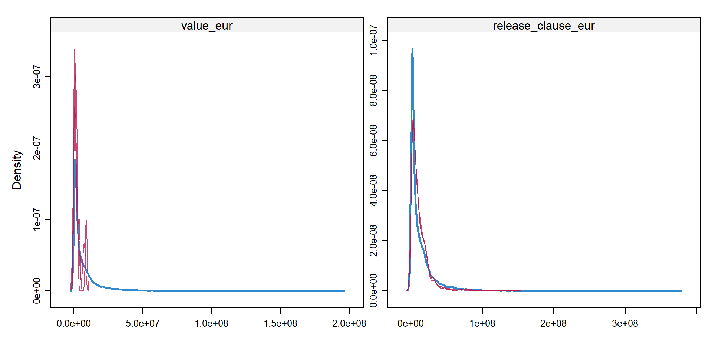
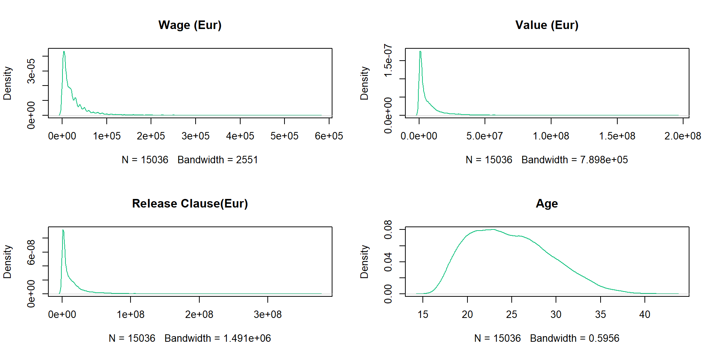
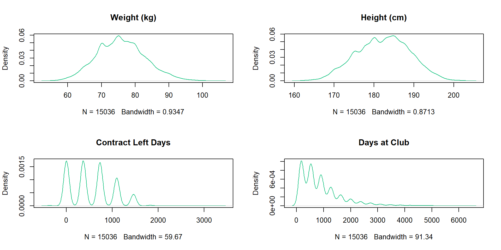
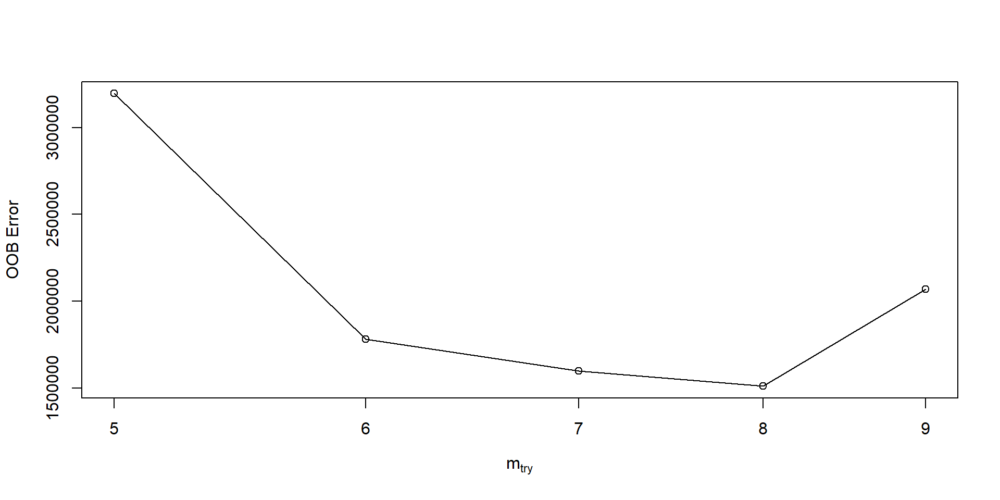
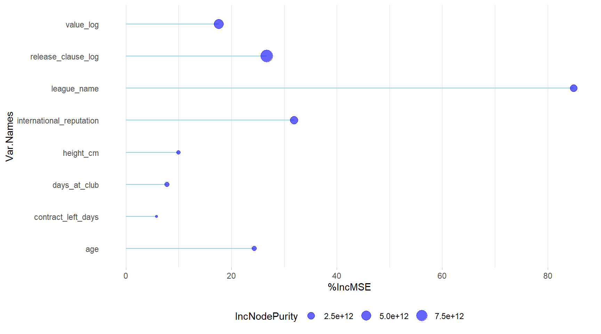
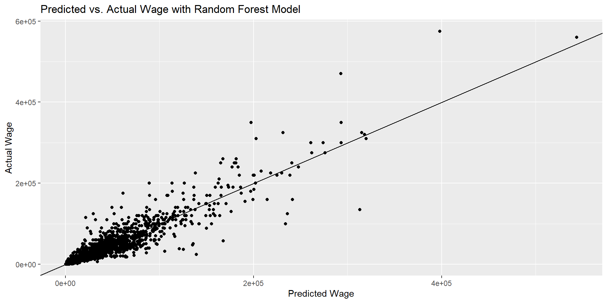
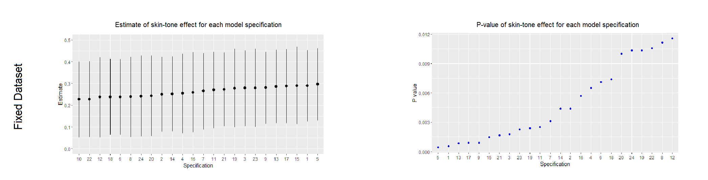
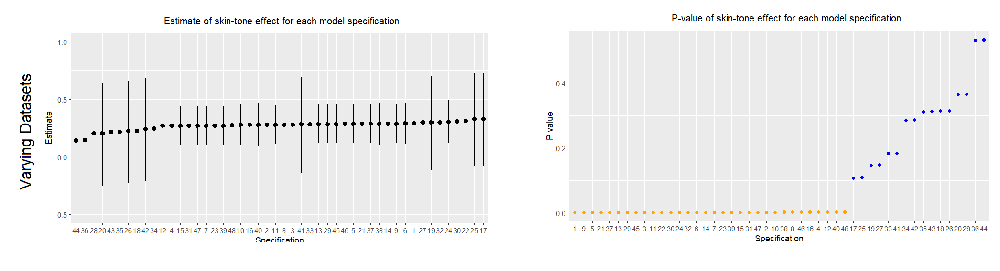

Quarto
Analysis and Prediction of Wage in FIFA 18-22 dataset
1/20/23
Quarto
Open-source publishing system
Publish high-quality articles, reports, presentations, websites, blogs and books.
Quarto
Author documents as plain text markdown or Jupyter notebooks.

Publish high-quality articles, reports, presentations, websites, blogs and books.
Quarto
Author documents as plain text markdown or Jupyter notebooks.

Publish high-quality articles, reports, presentations, websites, blogs and books.
Did you realize?
This presentation was also made using Quarto + Reveal.js
Quarto
Create Dynamic Content
Quarto
Create Dynamic Content


Dynamic Report Generation
With Quarto + R
Data Analysis and Prediction of Wage of FIFA players
The Dataset
We will be working with FIFA 22 complete player dataset from Kaggle. Our focus will be on modelling the dependence of player’s wage on attributes like age, reputation, etc. and predict the wage of some players on out-of-sample data.

Note
We will be using the FIFA player dataset from the years 2018 till 2022.
Loading Packages & Reading Data
As the first step, we will set a seed. This will ensure reproducibility of the stochastic processes happening in the analysis (like random sampling).
| fifa_version | value_eur | wage_eur | age | height_cm | weight_kg | league_name | club_contract_valid_until | club_joined | preferred_foot | international_reputation | work_rate | body_type | release_clause_eur |
|---|---|---|---|---|---|---|---|---|---|---|---|---|---|
| 18 | 9.55e+07 | 575000 | 32 | 185 | 80 | Spain Primera Division | 2021 | 2009-07-01 | Right | 5 | High/Low | Unique | 195800000 |
| 18 | 1.05e+08 | 575000 | 30 | 170 | 72 | Spain Primera Division | 2018 | 2004-07-01 | Left | 5 | Medium/Medium | Unique | 215300000 |
| 18 | 6.10e+07 | 225000 | 31 | 193 | 92 | German 1. Bundesliga | 2021 | 2011-07-01 | Right | 5 | Medium/Medium | Normal (185+) | 100700000 |
| 18 | 9.70e+07 | 500000 | 30 | 182 | 86 | Spain Primera Division | 2021 | 2014-07-11 | Right | 5 | High/Medium | Normal (170-185) | 198900000 |
| 18 | 1.23e+08 | 275000 | 25 | 175 | 68 | French Ligue 1 | 2022 | 2017-08-03 | Right | 5 | High/Medium | Unique | 236800000 |
Data Cleaning
The dataframe has 92705 rows, comprising players from 57 leagues. We will select the top 7 leagues according to UEFA rankings. The following are the top 7 leagues:
- Premier League | England
- La Liga | Spain
- Serie A | Italy
- Bundesliga | Germany
- Primeira Liga | Portugal
- Ligue 1 | France
- Eredivisie | Netherlands
Exploratory Data Analysis
Missing Data Analysis
We can find out the columns which have missing values, with the code snippet below:
The following columns have missing values: value_eur, release_clause_eur
The count of missing values compared to the total number of rows:
# A tibble: 5 × 4
fifa_version release_clause_na value_na row_count
<int> <int> <int> <int>
1 18 286 1 3949
2 19 220 1 3959
3 20 203 2 4018
4 21 166 2 4068
5 22 302 0 3973We can visualize the missing values in the following plot:

Missing Value Imputation
We will now impute the missing values using the mice package in R
Let’s compare the distribution of imputed data and the original data:
Figure 2: Distribution of the imputed data v/s original data
Figure 2 shows the distribution of imputed data (red) over the distribution of the original data (blue). We see that they follow similar distributions. So, the imputation of our missing values hasn’t adversely affected our data distribution.
Feature Engineering
Creating New Features
Based on the FIFA version, club_joined date and club_contract_valid_until date, we can create the following 2 features: contract_left_days and days_at_club
| fifa_version | club_joined | club_contract_valid_until | contract_left_days | days_at_club |
|---|---|---|---|---|
| 2018-01-01 | 2009-07-01 | 2021-01-01 | 1096 | 3106 |
| 2018-01-01 | 2004-07-01 | 2018-01-01 | 0 | 4932 |
| 2018-01-01 | 2011-07-01 | 2021-01-01 | 1096 | 2376 |
| 2018-01-01 | 2014-07-11 | 2021-01-01 | 1096 | 1270 |
| 2018-01-01 | 2017-08-03 | 2022-01-01 | 1461 | 151 |
| 2018-01-01 | 2014-07-01 | 2021-01-01 | 1096 | 1280 |
Transforming Features
The features: body_type and work_rate have string values with mixed types. That can be formatted to generate cleaner categories:
The features of the data have the following types now:
'data.frame': 18796 obs. of 13 variables:
$ value_eur : num 9.55e+07 1.05e+08 6.10e+07 9.70e+07 1.23e+08 9.20e+07 5.20e+07 7.70e+07 7.90e+07 9.05e+07 ...
$ wage_eur : num 575000 575000 225000 500000 275000 350000 300000 275000 325000 300000 ...
$ age : int 32 30 31 30 25 28 31 29 27 26 ...
$ height_cm : int 185 170 193 182 175 185 183 184 182 173 ...
$ weight_kg : int 80 72 92 86 68 79 75 87 78 76 ...
$ league_name : chr "Spain Primera Division" "Spain Primera Division" "German 1. Bundesliga" "Spain Primera Division" ...
$ preferred_foot : chr "Right" "Left" "Right" "Right" ...
$ international_reputation: int 5 5 5 5 5 4 4 4 4 4 ...
$ work_rate : chr "High" "Medium" "Medium" "High" ...
$ body_type : chr "Unique" "Unique" "Normal" "Normal" ...
$ release_clause_eur : num 1.96e+08 2.15e+08 1.01e+08 1.99e+08 2.37e+08 ...
$ contract_left_days : num 1096 0 1096 1096 1461 ...
$ days_at_club : num 3106 4932 2376 1270 151 ...The features: league_name, preferred_foot, work_rate, body_type and international_reputation can be converted to categorical type to facilitate model fitting.
Train-Test Split
Now the data is ready for splitting into training (including validation) and testing datasets. The test dataset will be utilized later, after designing the models, for predicting the wage on out-of-sample data.
We will select 80% of the data for training, and keep 20% as unseen data for prediction.
Fitting Regression Models
Now we will model the dependence of Wage on other covariates. The models will be used to make prediction on the unseen data later.
Linear Model
Call:
lm(formula = wage_eur ~ ., data = player_df)
Residuals:
Min 1Q Median 3Q Max
-245650 -5724 245 4662 239997
Coefficients:
Estimate Std. Error t value Pr(>|t|)
(Intercept) 3.358e+04 5.074e+03 6.618 3.76e-11
value_eur 6.064e-04 5.247e-05 11.558 < 2e-16
age 8.992e+02 4.068e+01 22.106 < 2e-16
height_cm -2.098e+02 3.783e+01 -5.545 2.99e-08
weight_kg 8.909e+01 3.729e+01 2.389 0.01691
league_nameFrench Ligue 1 -2.036e+04 5.156e+02 -39.482 < 2e-16
league_nameGerman 1. Bundesliga -1.924e+04 5.262e+02 -36.563 < 2e-16
league_nameHolland Eredivisie -2.437e+04 5.734e+02 -42.501 < 2e-16
league_nameItalian Serie A -1.546e+04 5.243e+02 -29.490 < 2e-16
league_namePortuguese Liga ZON SAGRES -2.914e+04 5.580e+02 -52.228 < 2e-16
league_nameSpain Primera Division -1.959e+04 5.148e+02 -38.061 < 2e-16
preferred_footRight 9.119e+01 3.310e+02 0.275 0.78296
international_reputation2 7.478e+03 4.528e+02 16.515 < 2e-16
international_reputation3 2.394e+04 7.522e+02 31.824 < 2e-16
international_reputation4 8.325e+04 1.555e+03 53.552 < 2e-16
international_reputation5 1.511e+05 3.942e+03 38.330 < 2e-16
work_rateLow -7.862e+02 7.879e+02 -0.998 0.31837
work_rateMedium -1.011e+03 3.361e+02 -3.009 0.00263
body_typeNormal -2.519e+02 3.325e+02 -0.758 0.44872
body_typeStocky -9.086e+02 7.346e+02 -1.237 0.21616
body_typeUnique -6.258e+03 1.489e+03 -4.204 2.64e-05
release_clause_eur 6.297e-04 2.981e-05 21.122 < 2e-16
contract_left_days 3.008e+00 3.665e-01 8.206 2.47e-16
days_at_club 1.964e+00 1.984e-01 9.895 < 2e-16
(Intercept) ***
value_eur ***
age ***
height_cm ***
weight_kg *
league_nameFrench Ligue 1 ***
league_nameGerman 1. Bundesliga ***
league_nameHolland Eredivisie ***
league_nameItalian Serie A ***
league_namePortuguese Liga ZON SAGRES ***
league_nameSpain Primera Division ***
preferred_footRight
international_reputation2 ***
international_reputation3 ***
international_reputation4 ***
international_reputation5 ***
work_rateLow
work_rateMedium **
body_typeNormal
body_typeStocky
body_typeUnique ***
release_clause_eur ***
contract_left_days ***
days_at_club ***
---
Signif. codes: 0 '***' 0.001 '**' 0.01 '*' 0.05 '.' 0.1 ' ' 1
Residual standard error: 17620 on 15012 degrees of freedom
Multiple R-squared: 0.7947, Adjusted R-squared: 0.7944
F-statistic: 2527 on 23 and 15012 DF, p-value: < 2.2e-16We see that the features: weight_kg, preferred_foot, work_rate and body_type have low signficance in modelling the wage.
Linear Model
So, let’s try a linear model without these factors:
Call:
lm(formula = wage_eur ~ value_eur + age + height_cm + league_name +
international_reputation + release_clause_eur + contract_left_days +
days_at_club, data = player_df)
Residuals:
Min 1Q Median 3Q Max
-247655 -5686 213 4625 239475
Coefficients:
Estimate Std. Error t value Pr(>|t|)
(Intercept) 2.941e+04 4.055e+03 7.252 4.32e-13
value_eur 5.426e-04 4.995e-05 10.862 < 2e-16
age 9.239e+02 3.947e+01 23.406 < 2e-16
height_cm -1.581e+02 2.214e+01 -7.139 9.85e-13
league_nameFrench Ligue 1 -2.039e+04 5.153e+02 -39.562 < 2e-16
league_nameGerman 1. Bundesliga -1.910e+04 5.239e+02 -36.456 < 2e-16
league_nameHolland Eredivisie -2.446e+04 5.697e+02 -42.932 < 2e-16
league_nameItalian Serie A -1.543e+04 5.237e+02 -29.473 < 2e-16
league_namePortuguese Liga ZON SAGRES -2.924e+04 5.555e+02 -52.645 < 2e-16
league_nameSpain Primera Division -1.969e+04 5.131e+02 -38.381 < 2e-16
international_reputation2 7.662e+03 4.517e+02 16.962 < 2e-16
international_reputation3 2.388e+04 7.520e+02 31.756 < 2e-16
international_reputation4 8.285e+04 1.551e+03 53.404 < 2e-16
international_reputation5 1.484e+05 3.881e+03 38.237 < 2e-16
release_clause_eur 6.558e-04 2.927e-05 22.404 < 2e-16
contract_left_days 3.194e+00 3.651e-01 8.747 < 2e-16
days_at_club 1.969e+00 1.984e-01 9.922 < 2e-16
(Intercept) ***
value_eur ***
age ***
height_cm ***
league_nameFrench Ligue 1 ***
league_nameGerman 1. Bundesliga ***
league_nameHolland Eredivisie ***
league_nameItalian Serie A ***
league_namePortuguese Liga ZON SAGRES ***
league_nameSpain Primera Division ***
international_reputation2 ***
international_reputation3 ***
international_reputation4 ***
international_reputation5 ***
release_clause_eur ***
contract_left_days ***
days_at_club ***
---
Signif. codes: 0 '***' 0.001 '**' 0.01 '*' 0.05 '.' 0.1 ' ' 1
Residual standard error: 17640 on 15019 degrees of freedom
Multiple R-squared: 0.7943, Adjusted R-squared: 0.7941
F-statistic: 3624 on 16 and 15019 DF, p-value: < 2.2e-16We see that the F-statistic has improved from 2527 to 3624, while Adjusted R-squared reduced from 0.7944 to 0.7941.
We see that the F-statistic has improved substantially, without much reduction in Adjusted R-squared value. So the model got better.
Generalized Linear Models
Since we are working with currency data (wage, value and release_clause), we cannot assume a normal distribution of the covariates (since they are non-negative and dense at low values). Let us plot the univariate distributions:
Generalized Linear Models
Since we are working with currency data (wage, value and release_clause), we cannot assume a normal distribution of the covariates (since they are non-negative and dense at low values). Let us plot the univariate distributions:
Generalized Linear Models
We can see that the currency variables (wage_eur, value_eur and release_clause_eur) are highly positively skewed, and far from normally distributed. Thus we should view them in a log-scale. The distribution after log transformation are shown below:
Figure 3: Log-tranformed Distribution
We can see that the positive skewness has been damped, and the log transformed variables are approximately Gaussian.
Gamma Distributed Response
If we log-transform the response variable (Wage), we will no longer be able to compare the model to the previous linear models where non-transformed Wage was used. It will also introduce extra bias due to nonlinear back-transformation with exponential function. Thus, we will keep the response variable in the original form, and rather fit a GLM with a family corresponding to its distribution.
Figure 4: Distribution of Wage, fitted with a Gamma density function
GLM with Gamma Family
Thus, we will fit a GLM with Gamma family, and with a log-link.
Call: glm(formula = wage_eur ~ value_log + age + height_cm + league_name +
international_reputation + release_clause_log + contract_left_days +
days_at_club, family = Gamma(link = "log"), data = player_df)
Coefficients:
(Intercept) value_log
2.653e-01 2.161e-01
age height_cm
6.967e-02 -4.365e-03
league_nameFrench Ligue 1 league_nameGerman 1. Bundesliga
-6.132e-01 -5.229e-01
league_nameHolland Eredivisie league_nameItalian Serie A
-1.239e+00 -4.113e-01
league_namePortuguese Liga ZON SAGRES league_nameSpain Primera Division
-1.484e+00 -6.742e-01
international_reputation2 international_reputation3
3.867e-02 1.404e-01
international_reputation4 international_reputation5
4.545e-01 6.118e-01
release_clause_log contract_left_days
3.651e-01 6.394e-05
days_at_club
4.784e-05
Degrees of Freedom: 15035 Total (i.e. Null); 15019 Residual
Null Deviance: 22430
Residual Deviance: 2562 AIC: 300900GLM with Gamma Family
Thus, we will fit a GLM with Gamma family, and with a log-link.
If we compare the AIC of the GLM with the previous Linear Model, we see:
- AIC of GLM (with Gamma family and log link) : 300907
- AIC of Linear Model 2 : 336730.2
Thus, the GLM has given a better result (lower AIC).
AIC-based step function for variable selection
We can see if the variables we initially omitted after linear model, may be added to the GLM, to reduce the AIC even further. We will start off with only value_log as predictor, and keep adding / removing covariates that reduce AIC.
Start: AIC=317023.6
wage_eur ~ value_log
Df Deviance AIC
+ league_name 6 4142.2 311766
+ age 1 5725.2 314546
+ international_reputation 4 6394.8 315733
+ days_at_club 1 6710.5 316284
+ contract_left_days 1 6912.4 316639
+ weight_kg 1 6977.4 316754
+ release_clause_log 1 7010.9 316813
+ height_cm 1 7096.9 316965
+ body_type 3 7113.1 316997
+ work_rate 2 7116.4 317001
+ preferred_foot 1 7129.4 317022
<none> 7131.5 317024
- value_log 1 22426.9 343985
Step: AIC=308375.2
wage_eur ~ value_log + league_name
Df Deviance AIC
+ age 1 2712.7 303756
+ international_reputation 4 3692.8 306930
+ contract_left_days 1 3927.5 307683
+ days_at_club 1 3943.1 307734
+ weight_kg 1 4061.6 308117
+ body_type 3 4103.2 308255
+ release_clause_log 1 4132.4 308345
+ height_cm 1 4134.2 308351
+ work_rate 2 4136.2 308360
+ preferred_foot 1 4141.1 308374
<none> 4142.2 308375
- league_name 6 7131.5 318027
- value_log 1 14989.6 343442
Step: AIC=301775.6
wage_eur ~ value_log + league_name + age
Df Deviance AIC
+ release_clause_log 1 2651.0 301468
+ international_reputation 4 2655.9 301498
+ days_at_club 1 2692.9 301678
+ height_cm 1 2700.6 301717
+ weight_kg 1 2707.9 301754
+ work_rate 2 2707.9 301755
+ body_type 3 2707.6 301756
+ contract_left_days 1 2710.0 301764
+ preferred_foot 1 2712.0 301774
<none> 2712.7 301776
- age 1 4142.2 308954
- league_name 6 5725.2 316895
- value_log 1 12195.5 349404
Step: AIC=301421.4
wage_eur ~ value_log + league_name + age + release_clause_log
Df Deviance AIC
+ international_reputation 4 2593.8 301136
+ days_at_club 1 2628.2 301307
+ height_cm 1 2639.9 301367
+ body_type 3 2643.6 301389
+ work_rate 2 2646.0 301400
+ weight_kg 1 2646.9 301402
+ contract_left_days 1 2649.7 301417
+ preferred_foot 1 2650.1 301419
<none> 2651.0 301421
- value_log 1 2681.4 301576
- release_clause_log 1 2712.7 301736
- age 1 4132.4 309023
- league_name 6 5485.3 315957
Step: AIC=301092.2
wage_eur ~ value_log + league_name + age + release_clause_log +
international_reputation
Df Deviance AIC
+ days_at_club 1 2581.1 301026
+ height_cm 1 2582.9 301036
+ weight_kg 1 2589.2 301069
+ work_rate 2 2589.1 301071
+ contract_left_days 1 2591.1 301080
+ body_type 3 2591.5 301086
+ preferred_foot 1 2593.0 301090
<none> 2593.8 301092
- value_log 1 2618.9 301224
- international_reputation 4 2651.0 301389
- release_clause_log 1 2655.9 301421
- age 1 3674.9 306858
- league_name 6 5331.1 315685
Step: AIC=301017.8
wage_eur ~ value_log + league_name + age + release_clause_log +
international_reputation + days_at_club
Df Deviance AIC
+ height_cm 1 2570.5 300963
+ contract_left_days 1 2573.7 300980
+ work_rate 2 2575.6 300993
+ weight_kg 1 2576.7 300996
+ body_type 3 2578.8 301012
+ preferred_foot 1 2580.1 301015
<none> 2581.1 301018
- days_at_club 1 2593.8 301084
- value_log 1 2604.4 301141
- international_reputation 4 2628.2 301263
- release_clause_log 1 2645.4 301361
- age 1 3577.6 306368
- league_name 6 5221.2 315186
Step: AIC=300956.3
wage_eur ~ value_log + league_name + age + release_clause_log +
international_reputation + days_at_club + height_cm
Df Deviance AIC
+ contract_left_days 1 2562.0 300912
+ work_rate 2 2568.2 300948
+ body_type 3 2568.3 300951
+ preferred_foot 1 2570.0 300956
+ weight_kg 1 2570.0 300956
<none> 2570.5 300956
- height_cm 1 2581.1 301011
- days_at_club 1 2582.9 301021
- value_log 1 2594.3 301083
- international_reputation 4 2617.6 301202
- release_clause_log 1 2633.7 301295
- age 1 3575.0 306366
- league_name 6 5221.2 315226
Step: AIC=300907
wage_eur ~ value_log + league_name + age + release_clause_log +
international_reputation + days_at_club + height_cm + contract_left_days
Df Deviance AIC
+ work_rate 2 2559.9 300900
+ body_type 3 2559.7 300901
+ preferred_foot 1 2561.5 300907
+ weight_kg 1 2561.6 300907
<none> 2562.0 300907
- contract_left_days 1 2570.5 300951
- height_cm 1 2573.7 300969
- days_at_club 1 2579.4 300999
- value_log 1 2585.2 301031
- international_reputation 4 2610.0 301159
- release_clause_log 1 2622.4 301232
- age 1 3515.4 306058
- league_name 6 5205.3 315181
Step: AIC=300898.4
wage_eur ~ value_log + league_name + age + release_clause_log +
international_reputation + days_at_club + height_cm + contract_left_days +
work_rate
Df Deviance AIC
+ body_type 3 2557.7 300893
+ weight_kg 1 2559.4 300898
<none> 2559.9 300898
+ preferred_foot 1 2559.5 300899
- work_rate 2 2562.0 300906
- contract_left_days 1 2568.2 300942
- height_cm 1 2568.3 300942
- days_at_club 1 2577.9 300994
- value_log 1 2582.5 301019
- international_reputation 4 2607.6 301149
- release_clause_log 1 2620.6 301225
- age 1 3510.4 306039
- league_name 6 5190.7 315121
Step: AIC=300891.3
wage_eur ~ value_log + league_name + age + release_clause_log +
international_reputation + days_at_club + height_cm + contract_left_days +
work_rate + body_type
Df Deviance AIC
+ weight_kg 1 2556.3 300886
<none> 2557.7 300891
+ preferred_foot 1 2557.4 300892
- body_type 3 2559.9 300897
- work_rate 2 2559.7 300898
- contract_left_days 1 2566.1 300935
- height_cm 1 2566.1 300935
- days_at_club 1 2575.7 300987
- value_log 1 2580.3 301011
- international_reputation 4 2601.4 301120
- release_clause_log 1 2617.5 301213
- age 1 3495.2 305970
- league_name 6 5155.1 314957
Step: AIC=300885
wage_eur ~ value_log + league_name + age + release_clause_log +
international_reputation + days_at_club + height_cm + contract_left_days +
work_rate + body_type + weight_kg
Df Deviance AIC
<none> 2556.3 300885
+ preferred_foot 1 2556.0 300885
- weight_kg 1 2557.7 300890
- work_rate 2 2558.4 300892
- body_type 3 2559.4 300896
- height_cm 1 2563.6 300923
- contract_left_days 1 2564.7 300928
- days_at_club 1 2574.3 300981
- value_log 1 2578.7 301005
- international_reputation 4 2599.3 301110
- release_clause_log 1 2616.3 301208
- age 1 3457.1 305770
- league_name 6 5132.2 314847AIC-based step function for variable selection
In the final model, only preferred_foot is the omitted variable. We include all other features in the GLM. Thus we form the next GLM:
Call: glm(formula = wage_eur ~ value_log + age + height_cm + league_name +
international_reputation + release_clause_log + contract_left_days +
days_at_club + weight_kg + work_rate + body_type, family = Gamma(link = "log"),
data = player_df)
Coefficients:
(Intercept) value_log
4.161e-01 2.137e-01
age height_cm
6.968e-02 -5.831e-03
league_nameFrench Ligue 1 league_nameGerman 1. Bundesliga
-6.110e-01 -5.223e-01
league_nameHolland Eredivisie league_nameItalian Serie A
-1.232e+00 -4.096e-01
league_namePortuguese Liga ZON SAGRES league_nameSpain Primera Division
-1.477e+00 -6.686e-01
international_reputation2 international_reputation3
3.760e-02 1.412e-01
international_reputation4 international_reputation5
4.504e-01 6.046e-01
release_clause_log contract_left_days
3.651e-01 6.326e-05
days_at_club weight_kg
4.859e-05 2.469e-03
work_rateLow work_rateMedium
-4.343e-02 -2.540e-02
body_typeNormal body_typeStocky
-3.286e-02 -1.957e-02
body_typeUnique
-2.678e-02
Degrees of Freedom: 15035 Total (i.e. Null); 15013 Residual
Null Deviance: 22430
Residual Deviance: 2556 AIC: 300900AIC of the updated GLM: 300885 (earlier GLM’s AIC: 300907 )
Random Forest Model
In the next stage, we will try to fit a random forest regression model for Wage analysis.
The code is as follows:
model.rf1 <- randomForest(wage_eur ~ value_log + age + height_cm + league_name +
international_reputation + release_clause_log +
contract_left_days + days_at_club, data=player_df, ntree=100,
keep.forest=TRUE, importance=TRUE)
model.rf1
Call:
randomForest(formula = wage_eur ~ value_log + age + height_cm + league_name + international_reputation + release_clause_log + contract_left_days + days_at_club, data = player_df, ntree = 100, keep.forest = TRUE, importance = TRUE)
Type of random forest: regression
Number of trees: 100
No. of variables tried at each split: 2
Mean of squared residuals: 199624051
% Var explained: 86.79Hyperparameter Optimization of Random Forest Model
One main hyperparameter we can tune in the Random Forest Model is mtry: the number of variables to randomly sample as candidates at each split. By default, it is set as p/3 where p is the number of features used in the model.
The best value of mtry can be found by finding the mtry corresponding to the minimum of OOB Error.
Hyperparameter Optimization of Random Forest Model
Tuning the mtry value to find the optimum for minimizing OOBError:
Figure 5: Random Forest tuning for best mtry value
We see that best mtry value is 8.
Hyperparameter Optimization of Random Forest Model
Using that in the improved Random Forest model:
model.rf2 <- randomForest(wage_eur ~ value_log + age + height_cm + league_name +
international_reputation + release_clause_log +
contract_left_days + days_at_club, data=player_df, ntree=100,
mtry=8, keep.forest=TRUE, importance=TRUE)
model.rf2
Call:
randomForest(formula = wage_eur ~ value_log + age + height_cm + league_name + international_reputation + release_clause_log + contract_left_days + days_at_club, data = player_df, ntree = 100, mtry = 8, keep.forest = TRUE, importance = TRUE)
Type of random forest: regression
Number of trees: 100
No. of variables tried at each split: 8
Mean of squared residuals: 198204509
% Var explained: 86.88Visualizing variable importance
The importance of variables used in the random forest model is visualized below:
Figure 6: Variable importance
Here we see 2 different metrics for assessing Variable Importance:
%IncMSE : Increase in MSE of predictions when the variable is permuted IncNodePurity : Average increase in node purity on splitting using the variable
%IncMSE is the more relevant metric, and we see that league_name plays most important role in the wage : permutations (shuffling) of the league_name can result in highest changes of Wage. That is followed by the international_reputation.
XGBoost Model
Next we use XGBoost (eXtreme Gradient Boosting) algorithm to design a model for Wage prediction. We will tune the parameters: max.depth and nrounds of the gradient boosting algorithm using grid search, and evaluating MAPE on a validation dataset. The model with best parameter choices are selected for evaluating on the test set later.
We convert the categorical variables to dummy variables since the XGBoost model requires a data matrix with numerical features. This is achieved with the following code:
XGBoost Model
Now we keep aside a portion of the data for validation, and generate data matrices for XGBoost:
XGBoost Model
Now we keep aside a portion of the data for validation, and generate data matrices for XGBoost:
sample <- sample.int(n = nrow(dummy_player_df), size = floor(.80*nrow(dummy_player_df)), replace = F)
train_xgb <- dummy_player_df[sample, ]
val_xgb <- dummy_player_df[-sample, ]
train_xgb_x <- data.matrix(train_xgb[, -which(names(train_xgb) %in% c('value_eur', 'wage_eur', 'wage_log', 'release_clause_eur'))])
train_xgb_y <- train_xgb$wage_eurXGBoost Model
Now we keep aside a portion of the data for validation, and generate data matrices for XGBoost:
sample <- sample.int(n = nrow(dummy_player_df), size = floor(.80*nrow(dummy_player_df)), replace = F)
train_xgb <- dummy_player_df[sample, ]
val_xgb <- dummy_player_df[-sample, ]
train_xgb_x <- data.matrix(train_xgb[, -which(names(train_xgb) %in% c('value_eur', 'wage_eur', 'wage_log', 'release_clause_eur'))])
train_xgb_y <- train_xgb$wage_eur
val_xgb_x <- data.matrix(val_xgb[, -which(names(val_xgb) %in% c('value_eur', 'wage_eur', 'wage_log', 'release_clause_eur'))])
val_xgb_y <- val_xgb$wage_eurXGBoost Model
Now we keep aside a portion of the data for validation, and generate data matrices for XGBoost:
sample <- sample.int(n = nrow(dummy_player_df), size = floor(.80*nrow(dummy_player_df)), replace = F)
train_xgb <- dummy_player_df[sample, ]
val_xgb <- dummy_player_df[-sample, ]
train_xgb_x <- data.matrix(train_xgb[, -which(names(train_xgb) %in% c('value_eur', 'wage_eur', 'wage_log', 'release_clause_eur'))])
train_xgb_y <- train_xgb$wage_eur
val_xgb_x <- data.matrix(val_xgb[, -which(names(val_xgb) %in% c('value_eur', 'wage_eur', 'wage_log', 'release_clause_eur'))])
val_xgb_y <- val_xgb$wage_eur
xgb_train = xgb.DMatrix(data = train_xgb_x, label = train_xgb_y)
xgb_val = xgb.DMatrix(data = val_xgb_x, label = val_xgb_y)Tuning XGBoost Model
To tune the max.depth and nrounds parameters of thr XGBoost model, we create a function: grid_search_xgb_val to display the MAPE for a particular (max.depth, nrounds) input:
grid_search_xgb_val <- function(depth, rounds){
model_xgboost = xgboost(data = xgb_train, max.depth = depth, nrounds = rounds, verbose = 0)
pred_y = predict(model_xgboost, xgb_val)
cat(sprintf("Depth:%d Rounds:%d MAPE:%f\n", depth, rounds, MAPE(pred_y, val_xgb_y)*100))
return(list("depth" = depth, "rounds" = rounds, "mape" = MAPE(pred_y, val_xgb_y)*100))
}Tuning XGBoost Model
Performing grid search with various values of max.depth and nrounds:
opt_depth <- 4
opt_rounds <- 40
min_mape <- 1000
for (depth in seq(3,12,by=1)) {
for (rounds in seq(40,160, by=20)) {
result <- grid_search_xgb_val(depth,rounds)
if(result$mape < min_mape) {
min_mape <- result$mape
opt_depth <- result$depth
opt_rounds <- result$rounds
cat(sprintf("New record:-- Depth:%d Rounds:%d MAPE:%f\n", opt_depth, opt_rounds, min_mape))
}
}
}Depth:3 Rounds:40 MAPE:45.020380
New record:-- Depth:3 Rounds:40 MAPE:45.020380
Depth:3 Rounds:60 MAPE:44.356035
New record:-- Depth:3 Rounds:60 MAPE:44.356035
Depth:3 Rounds:80 MAPE:44.062728
New record:-- Depth:3 Rounds:80 MAPE:44.062728
Depth:3 Rounds:100 MAPE:41.720931
New record:-- Depth:3 Rounds:100 MAPE:41.720931
Depth:3 Rounds:120 MAPE:41.947089
Depth:3 Rounds:140 MAPE:41.319777
New record:-- Depth:3 Rounds:140 MAPE:41.319777
Depth:3 Rounds:160 MAPE:41.013442
New record:-- Depth:3 Rounds:160 MAPE:41.013442
Depth:4 Rounds:40 MAPE:39.406280
New record:-- Depth:4 Rounds:40 MAPE:39.406280
Depth:4 Rounds:60 MAPE:38.347885
New record:-- Depth:4 Rounds:60 MAPE:38.347885
Depth:4 Rounds:80 MAPE:37.476787
New record:-- Depth:4 Rounds:80 MAPE:37.476787
Depth:4 Rounds:100 MAPE:37.517248
Depth:4 Rounds:120 MAPE:37.615807
Depth:4 Rounds:140 MAPE:37.527248
Depth:4 Rounds:160 MAPE:37.358606
New record:-- Depth:4 Rounds:160 MAPE:37.358606
Depth:5 Rounds:40 MAPE:36.493160
New record:-- Depth:5 Rounds:40 MAPE:36.493160
Depth:5 Rounds:60 MAPE:36.506876
Depth:5 Rounds:80 MAPE:36.434234
New record:-- Depth:5 Rounds:80 MAPE:36.434234
Depth:5 Rounds:100 MAPE:36.602232
Depth:5 Rounds:120 MAPE:36.998485
Depth:5 Rounds:140 MAPE:37.323993
Depth:5 Rounds:160 MAPE:37.729600
Depth:6 Rounds:40 MAPE:35.701894
New record:-- Depth:6 Rounds:40 MAPE:35.701894
Depth:6 Rounds:60 MAPE:35.348273
New record:-- Depth:6 Rounds:60 MAPE:35.348273
Depth:6 Rounds:80 MAPE:35.531947
Depth:6 Rounds:100 MAPE:36.131182
Depth:6 Rounds:120 MAPE:36.740621
Depth:6 Rounds:140 MAPE:37.241437
Depth:6 Rounds:160 MAPE:37.640350
Depth:7 Rounds:40 MAPE:35.621537
Depth:7 Rounds:60 MAPE:35.874247
Depth:7 Rounds:80 MAPE:36.549695
Depth:7 Rounds:100 MAPE:36.832719
Depth:7 Rounds:120 MAPE:36.930043
Depth:7 Rounds:140 MAPE:37.140745
Depth:7 Rounds:160 MAPE:37.285426
Depth:8 Rounds:40 MAPE:35.675616
Depth:8 Rounds:60 MAPE:36.648693
Depth:8 Rounds:80 MAPE:37.082722
Depth:8 Rounds:100 MAPE:37.406055
Depth:8 Rounds:120 MAPE:37.879689
Depth:8 Rounds:140 MAPE:38.203989
Depth:8 Rounds:160 MAPE:38.671443
Depth:9 Rounds:40 MAPE:35.674975
Depth:9 Rounds:60 MAPE:36.219128
Depth:9 Rounds:80 MAPE:36.537620
Depth:9 Rounds:100 MAPE:36.976302
Depth:9 Rounds:120 MAPE:37.139351
Depth:9 Rounds:140 MAPE:37.423246
Depth:9 Rounds:160 MAPE:37.767735
Depth:10 Rounds:40 MAPE:35.121622
New record:-- Depth:10 Rounds:40 MAPE:35.121622
Depth:10 Rounds:60 MAPE:35.741637
Depth:10 Rounds:80 MAPE:36.379630
Depth:10 Rounds:100 MAPE:36.685486
Depth:10 Rounds:120 MAPE:36.872402
Depth:10 Rounds:140 MAPE:37.133483
Depth:10 Rounds:160 MAPE:37.124267
Depth:11 Rounds:40 MAPE:34.911245
New record:-- Depth:11 Rounds:40 MAPE:34.911245
Depth:11 Rounds:60 MAPE:35.263404
Depth:11 Rounds:80 MAPE:35.488997
Depth:11 Rounds:100 MAPE:35.733378
Depth:11 Rounds:120 MAPE:35.981452
Depth:11 Rounds:140 MAPE:36.126925
Depth:11 Rounds:160 MAPE:36.163749
Depth:12 Rounds:40 MAPE:34.679958
New record:-- Depth:12 Rounds:40 MAPE:34.679958
Depth:12 Rounds:60 MAPE:35.066651
Depth:12 Rounds:80 MAPE:35.273275
Depth:12 Rounds:100 MAPE:35.403185
Depth:12 Rounds:120 MAPE:35.452218
Depth:12 Rounds:140 MAPE:35.484310
Depth:12 Rounds:160 MAPE:35.503255From the console output, we see that the minimum MAPE (34.6799577) is obtained for max.depth = 12 and nrounds = 40. Thus, we retain the XGBoost model with those hyperparameters.
Wage Prediction
Using the models we have created, we will predict the Wage on unseen data (unseen during model fitting), and compare MAPE: The Mean Absolute Percentage Error.
Baseline Model Prediction
To get a minimum performance (baseline) for wage prediction, we can use the mean wage from training dataset, and use that as prediction in the test data.
Mean wage from training data :26970.73. We can calculate the MAPE using the following code:
Thus, the baseline MAPE is 421.798. Any model we propose should have MAPE less than this, to be considered useful.
Linear Models Prediction
Using the first linear model (where we used all covariates), we obtain the following MAPE:
Using the second linear model (with only significant features selected), we obtain the following MAPE:
We see that both linear models have more than 80% MAPE. That is not a very good performance.
Generalized Linear Models Prediction
Using the first glm (without AIC-based feature selection), we get the following MAPE:
Using the second glm (with AIC-based feature selection), we get the following MAPE:
We see a drastic improvement in performance using the GLM model, since it used Gamma distribution to model the Wage, with a log-link. This indeed helped in improving the model.
Random Forest Model Prediction
Using the first random forest model (without hyperparameter optimization), we get the following MAPE:
Using the random forest model after hyperparameter optimization, we get the following MAPE:
XGBoost Model Prediction
We create dummy variables for categorical features in the test dataset, to be able to use the XGBoost model.
Using the XGBoost model for wage prediction, we get the following MAPE:
Analysis Conclusion
Out of all the models we evaluated on the test set; the Random Forest model (after hyperparameter tuning) gave the best MAPE result. The scatter-plot of predicted wage v/s actual wage on unseen data is as shown below:
Figure 7: Scatter-plot of Predicted v/s Actual Wage with Random Forest Model
Detour: Reproduction Phase
Multiverse Analysis Using tidy-models
Code run status: Good
Ran smooth; Generated output plots of estimated effect of skin-tone on getting a red-card and associated p-value of the hypothesis; for different model configurations.

Multiverse Analysis Using tidy-models
Code run status: Good
Ran smooth; Generated output plots of estimated effect of skin-tone on getting a red-card and associated p-value of the hypothesis; for different model configurations.

Back to Quarto
Reproducibility Aspect of Quarto
Quarto combines code, output, plots, and regular text into one coherent document.
Perfect for reproducing analysis results, since the author’s course of actions in his degrees of freedom (during data pre-processing, feature engineering, feature selection, model selection, hyperparameter tuning) are all recorded in the document generated by Quarto.
Since Quarto can generate reproducible reports, it can avoid having to copy-paste figures into a Word document, and generating a PDF out of it, which could be hard to reproduce by other analysts.
Reproducibility Aspect of Quarto
Dynamic Reports
Ability to generate dynamic reports: where the outputs, plots, and even text description could be generated automatically by the code (without hard-coding) gives freedom to the analyst to test the analysis with different settings / data and examine results reproducibility.
The document generated by this analysis (FIFA-Wage) is hosted here.
Discussion
Does enabling Dynamic-document creation help or affect Reproducibility?
Do you think too much dynamicity of reports (like entire description) could have adverse effects on knowledge transfer?
Would it be better to keep text descriptions static, so that results reproducibility can be validated?
FIFA Wage Prediction with Quarto